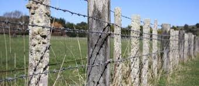
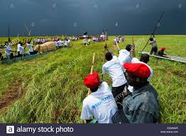
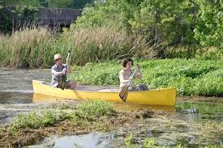
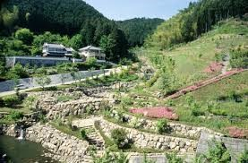
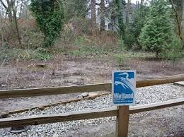
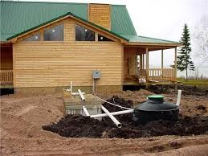

SWAMPS
1. Fencing
- In areas where livestock grazing in wetlands or excessive human use is degrading wetlands, fencing is one of the simplest ways to protect your wetland.
- This is especially critical in wetlands along streams and lakes where the degradation is directly impacting water quality through erosion and sedimentation.
- Even if you can't fence all of your wetland, you can often fence off overused places where extra protection is necessary.
- 
2. Recreational Use
- Recreational activities such as hunting, fishing, hiking, canoeing, and bird watching are compatible with wetland protection as long as wildlife and their habitat are not disturbed by overuse.
- If you and your family and friends are the only individuals using the wetland, then recreation activities are not likely to be a problem.
- However, if you have many other individuals using your land who may not be sensitive to the needs of wildlife,
- then you may need to limit some uses during critical times such as breeding or nesting seasons.
- Accomplishing this might be as simple as a sign at access points of something more complicated like installing a fence or constructing a boardwalk to manage where people go in the wetland.
- 
- 
3. controlling Erosion
- In shoreline areas that are experiencing erosion, controlling erosion is very important.
- The first step in controlling erosion is to evaluate the nature and extent of the problem and determine if the problem is serious enough to warrant corrective action.
- There are two basic reasons for controlling erosion: to protect property and to protect the environment.
- If the erosion is largely the result of natural processes that do not harm the environment and that do not threaten property,
- then erosion control may not be necessary.
- Assuming that you determine the nature and extent of the erosion warrant corrective measures,
- the next step is to look at the alternative methods of control and select the one that is most appropriate.
- 
4. Fertilizers and Pesticides
- There are many safe alternatives to chemical fertilizers and pesticides around the home.
- Organic pesticide formulations, use of other insects to fight pests, and composting kitchen and yard waste to enrich soil have all been successful in meeting the needs of homeowners
- Many homeowners use fertilizers when they do not need to. Before you decide to use fertilizers, you should get your soil tested to see if it is even necessary.
- If you do use fertilizers or pesticides, follow manufacturer's directions carefully. Never apply more than is recommended.
- On the farm, use pesticides, herbicides, and fertilizers only when needed and within product guidelines.
- The establishment of a chemical - free greenbelt to buffer the wetland from upland use of fertilizers and pesticides is very important.
5. protect wetlands from adjacent human activities
- Perhaps the most effective management practice to protect wetlands from adjacent human activities is to establish and maintain a vegetative buffer around the wetland.
- Activities such as crop farming, brick laying, papyrus cutting
- 
6. Septic Systems
- Septic systems also are a source of pollutants to wetlands. Be sure your septic system is operating properly.
- If you notice the area over your drain field is wet or particularly green, or if you can smell sewage during rainy periods, then your system is not working properly.
- Seepage from your system may be polluting nearby areas, including your wetland.
- To avoid this problem, have your septic system pumped and inspected every three to five years (or less, depending on the system) and commit to upgrading the system when necessary.
- In addition, water conservation practices such as installing low-flow toilets and shower heads can extend the life of a septic system
- 